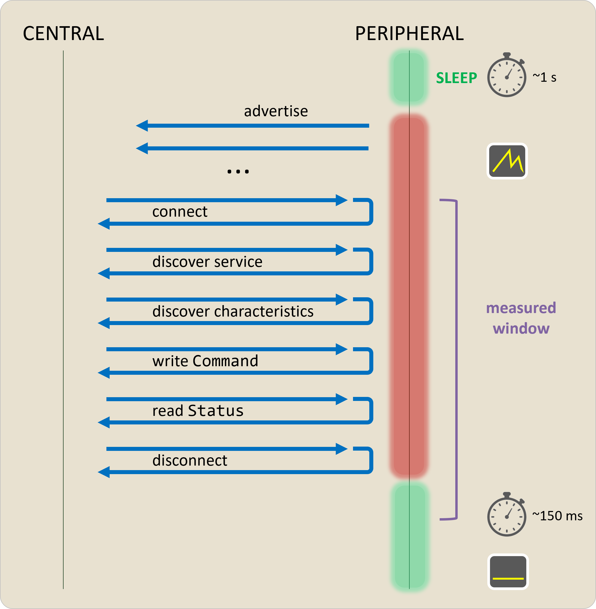
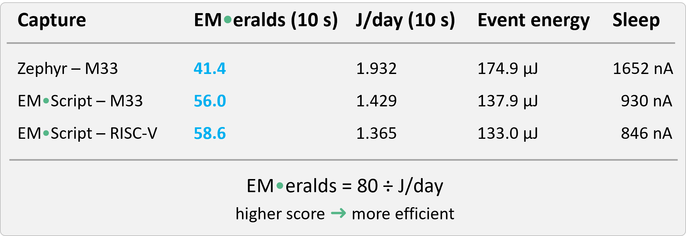
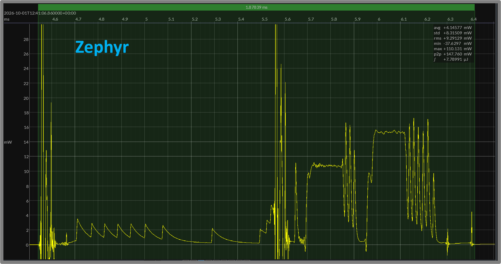
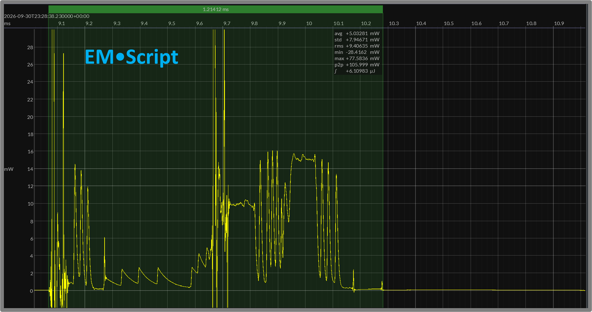
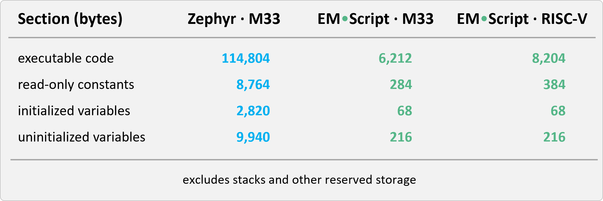

Different hardware · Same software
Industry benchmarks typically run a common program on different processors. Think CoreMark® …
These scores provide a familiar basis for comparing hardware – and often appear in vendor data sheets.
Same hardware · Different software
But what if we turn the comparison around – materially changing the software on the same hardware?
Let’s put that to the test – by quantifying software’s impact on energy efficiency in embedded systems.
Run the same workload
BlueJoule measures the energy consumption within a system performing a defined BLE workload.
By prescribing behavior rather than source code, the benchmark suite leaves room for fundamentally different (yet compliant) software designs.
Add BLE connections
The original BlueJoule-ADV workload (defined in 2025) measured periodic advertising across a range of platforms from popular BLE silicon vendors.
BlueJoule-GATT now extends the benchmark suite with a connected transaction between a pair of BLE devices playing the Central and Peripheral roles:

Compare configurations
Each BlueJoule result reflects a complete HW/SW configuration performing the prescribed workload.
Transaction energy plus sleep power determine an EMerald score – higher means greater efficiency.
The same workload allows us to easily compare different hardware, different software, or both.
So let’s hold the hardware constant – and see what changing the software might reveal …
Pick the platform
Start with a single hardware device and a working software stack compliant with BlueJoule-GATT.
For this experiment, we chose Nordic’s nRF54L15 running Zephyr on its Cortex-M33 CPU – though this approach scales to other vendor silicon as well.
Change the software
Keep hardware and workload fixed – but replace Zephyr with compliant software written in EMScript.
Both programs complete the prescribed transaction with the same reference BLE Central – allowing us to quantify the impact of switching software.
Extend the experiment
Software changes can also dictate where the code runs – FLASH vs SRAM, or on one CPU vs another.
The nRF54L15 includes a second, RISC-V CPU that EMScript also supports – adding another compliant BlueJoule-GATT implementation to the experiment.
Compare the results
We measured three different BlueJoule-GATT software implementations using a Joulescope JS220.
Each transaction-energy result averages ten completed connections, excluding initial advertising.

EMScript on the Cortex-M33 consumes 21% less overall transaction energy than Zephyr.
Lower sleep current further improves its EMerald score – which quantifies overall energy efficiency.
Remarkably, the EMScript implementation on the nRF54L15’s RISC-V CPU turned in the best scores.
Look inside an event
On the same Cortex-M33 CPU, zoom to a single corresponding Central · Peripheral packet exchange within the connection transaction.


Within this BLE packet exchange, EMScript uses 22% less energy and returns to idle 35% sooner.
What explains the difference?
The hardware and workload remain the same, but software takes a fundamentally different approach.
To understand these results, let’s examine another measurable difference – the amount of code required to implement the BlueJoule-GATT workload.
Count the bytes
Linker maps for this trio of compliant programs reveal how much code, constant storage, and writable data each implementation requires:

Needless to say, Zephyr dwarfs its EMScript counterpart on the M33 – using roughly 18× more code. Other program sections show similar disparities.
Fits in SRAM
When targeting the RISC-V CPU, the EMScript program's code + const size grew ~30% – consistent with guidance provided by Nordic.
The entire program (including space for its stack) in fact fits within a single 16K block of SRAM – increasing throughput of the RISC-V CPU.
“Tiny Code” does matter
Who doesn't want smaller programs when targeting resource-constrained MCUs?
Less code/data can fit in smaller, lower-cost chips – saving memory, board space, and system cost.
But tiny code also opens several paths for increasing overall energy efficiency :
➤execute
fewer
instructions · sleep
sooner
➤reduce CPU
instruction-cache pressure
➤minimize NVM
access while active
➤retain less
SRAM while sleeping
Specialize your software
The EMScript programming language targets resource-constrained MCUs – used in systems where every byte of memory and μJ of energy matters.
Using a novel translator, EMScript encourages build-time specialization – allowing application programs to tailor their run-time firmware content.
For BlueJoule-GATT we only implement the benchmark’s prescribed behavior – without carrying unneeded features of a general-purpose BLE stack.
EMScript also generates an optimized, purpose-built GATT database – given a description of the benchmark's BLE service and characteristics.
The EM Foundation has already initiated the Bluetooth Qualification Process for its compact EMScript stack.